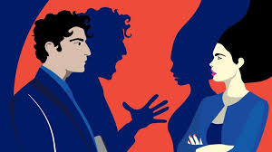

La organización norteamericana Stop Street Harassmen establece el ASC como: “Interacciones indeseadas en espacios públicos entre desconocidos que son motivadas por el género efectivo o percibido, orientación sexual o expresión de género de una persona que hacen que la víctima se sienta molesta, enojada, humillada o espantada” (Stop Street Harassmen, 2014, p. 5, citado en Lizcano et al, 2019) .
De esta manera, al hablar de acoso sexual callejero en el contexto colombiano se considera importante hablar del concepto de machismo como una variable determinante para el mantenimiento del mencionado fenómeno en la actualidad. De este modo, se conoce como “la creencia de superioridad del hombre” (Giraldo, 2009, citado en Carvajal et al, 2022). Daros (2014) define el machismo como una construcción cultural dirigida al modo particular y rígido de proyectar el rol masculino estableciendo a través del tiempo las expectativas de comportamiento, valores y actitudes en torno del llamado “Varón de sociedad”, lo que compone la ideología de superioridad del hombre con respecto de la mujer. Teniendo en cuenta esto, el machismo afecta el pensamiento y el actuar de todos, ya que como es bien sabido en el caso de la mujer, produce discriminaciones e infravaloraciones reflejadas en diversos contextos desvalorizando sus capacidades y dejando la idea de que la mujer está en situación de subordinación al hombre supliendo necesidades domésticas y sexuales (Daros, 2014). En el caso del hombre, esta idealización del rol masculino termina visibilizando carencias en su actuar y diversas limitaciones en su comportamiento ya que eso “no es de hombres”, carencias tales como expresión emocional y sentir, inseguridad, su introspección, la percepción que tengan de las mujeres y su condicionamiento en el trato con las mismas, su manera de vivir el sexo, el amor e incluso la amistad (Castañeda, 2019), el machismo en el hombre se ve reflejado en las barreras que presentan al comunicarse, sus expectativas y los roles establecidos en la sociedad para cada género, catalogando de “Raro”, “Desviado” o “incorrecto” cualquier comportamiento que se salga de dichos roles.
Así, una de las conceptualizaciones importantes dentro de este fenómeno es la desigualdad de género prevalecientes en el uso, tránsito y empoderamiento del espacio público, de esta manera la calle se concibe para la mujer como un lugar ajeno, que debe descubrir y conquistar a partir de los temores aprendidos culturalmente. A partir de estudios realizados por Toro y Sierra (2017, citado en Lizcano et al, 2019) acerca de cartografías del miedo y el temor realizados en Medellín, las mujeres estructuran todo un ritual “inconsciente y naturalizado para habitar el espacio público” (p. 69) lo cual constituye una práctica adaptativa que va desde el cuidado extremo en la apariencia física a través de la vestimenta, la presencia en lugares que se consideren vulnerables y en horas de la noche para evitar ser víctima de ASC.
Estrategia "las 5D" para combatir el acoso callejero
Se trata de un programa promovido por la marca L'oreal Paris que tiene por objeto visibilizar esta problemática y brindar herramientas concretas de intervención. El obejtivo de esta estrategia es formar a las personas sobre cómo pueden actuar de manera segura ante estas situaciones en espacios públicos, utilizando la metodología de las 5D: Distraer, delegar, documentar, dar asistencia y dirigirse al acosador (Infobae, 2023).
Esta iniciativa no solo brinda estrategias para las personas que han sido víctimas de ASC sino también existen herramientas para los que resultan siendo espectadores en una situación de ASC. En este sentido, para las víctimas que han tenido que atravesar alguno de estos eventos se les recuerda que no están sol@s, que esto no se debe tomar a la ligera porque deja secuelas y produce cambios comportamentales como método de supervivencia al espacio público así que al estar en una situación así confía en lo que estas percibiendo en el momento, tu comodidad ante la situación, la gente que te rodea, salidas cercanas,entre otras cosas. Algunas de las acciones que puedes tomar frente a esto son: Decirle a tu agresor que se aleje, que pare con lo que está haciendo y diciendo, también es importante que pidas ayuda a una persona cerca así como grabar al sujeto acosador; de esta manera, dejamos de normalizar estos actos y logramos empoderar a las víctimas frente a sus agresores.

Ahora bien, cómo podemos actuar al presenciar una situación de estas. En realidad este fenómeno es más común de lo que pensamos ya que pasa todos los días y cualquier lugar público, se puede manifestar en abrazos o manoseos no consentidos, miradas, hacer presión o frotarse en el cuerpo de otra persona, gestos obsenos o sexuales, comentarios respecto al cuerpo o a la forma de vestir, roces "accidentales", exhibicionismo, masturbación, entre otros., y si en alguna ocasión no estas segur@ de que sea acoso, solo observa la reacción de la persona que presuntamente está siendo acosada, si crees que hay algo que no está bien es muy probable que estes en lo cierto. Es probable que al presenciar alguno de estos actos, no hayas hecho nada y te dieras cuenta que nadie de los que estaban alrededor hicieran algo, esto ya que en muchas ocasiones no saben que hacer o tienen miedo de intervenir. De acuerdo con esto, te explicaremos de manera breve las acciones que puedes tomar para ayudar a la persona acosada y para evitar consecuencias negativas para ti:
- Dar asistencia:Dirígete a la persona que está atravesando por la situación de acoso y háblale. Hazle saber que lo que sucedió no es correcto y que no tiene la culpa de absolutamente nada.Transmítele que la comprendes y brindale el apoyo que requiera. Recuerda, la empatía es un gran paso.
- Delegar:Avisale a alguien que se encuentre cerca sobre lo que está pasando y preguntale si puede hacer algo. Si tienes la posibilidad, también puedes pedirle ayuda a una persona con autoridad en el espacio en el que te encuentres. Pedir ayuda a otra persona también es ayudar.
- Documentar: Esto puede parecer sencillo y hasta obvio, pero recuerda que lo haces para ayudar a la persona acosada así que, siguiendo ese objetivo, siempre consulta con esa persona lo que quiere hacer con lo que grabaste.
- Dirigirse al acosador:Dile que lo que está haciendo es incorrecto pero no entres en una discusión. Simplemente, pídele que deje tranquila a la persona o habla con la persona acosada sobre lo ocurrido. Este paso debe ser el último recurso, para evitar de esta manera que la vioelncia pueda escalar. La seguridad de la persona acosada y la tuya son lo más importante.
- Distraer:Esta es una manera indirecta de desviar la atención de lo que está sucediendo hacia otra cosa. Algunas maneras de distraer son:
- Preguntar por una dirección, la hora o un cajero cercano
- Ponerte en el medio
- Llamar la atención con algún ruido
- Tirar algo "accidentalmente"